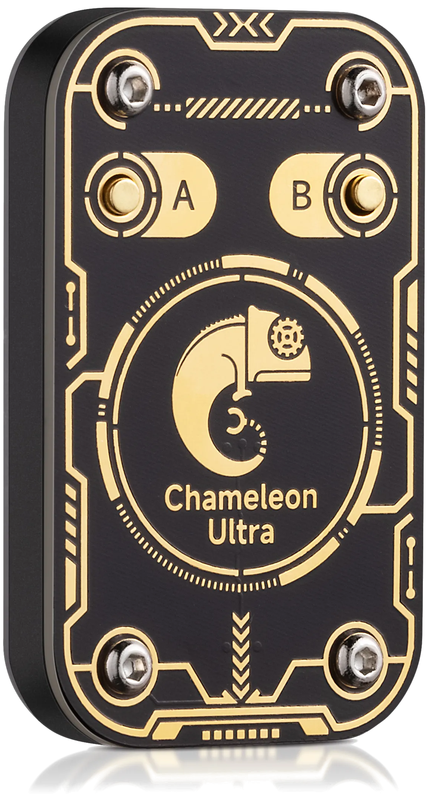

Built for ChameleonUltra & ChameleonLite
Your cards.
Your device.
Your ChameLab.
Desktop, mobile and web app for ChameleonUltra and ChameleonLite, together with an extended firmware and the command line client.

- Windows
- macOS
- Linux
- Android
- Web
01 / YOUR WORKSPACE
Everything your device can do.
In one place.
Slots
All eight slots at a glance, with each card's name and LED color. Drag to reorder, tap to activate, edit HF and LF separately.
Multi-card LF Only here
One LF slot holds up to eight LF cards of any emulated type, in any mix, and presents them to a reader one after another, with a set time per card and optional silence between them. No other Chameleon firmware or app can do this.
Read and dump
ISO14443-A and LF scans. MIFARE Classic Mini, 1K and 4K dumps with your key dictionaries, edited as hex and emulated in one tap.
Saved cards
A card library with search and color tags. Imports ChameleonUltraGUI, Proxmark3,
Flipper .nfc/.rfid, MCT, .bin and .eml.
Cloning
Write LF IDs to T55xx and MIFARE Classic to Gen1a / Gen2 magic cards.
Emulator settings
Gen1a / Gen2 modes, write modes, nonce detection for mfkey32, Ultralight / NTAG version, signature and counters.
Device settings
LED animation, button actions, long-press threshold, sleep timeout, BLE pairing, factory reset and firmware updates over USB or Bluetooth.
HF and LF sniffing
Record a reader talking to the card in the active slot, every frame labelled, with MIFARE Classic keys recovered on the spot. Capture the 125 kHz signal as a zoomable waveform and decode it.
Stop anything
Every long operation (dumps, key recovery attacks, writing magic cards, sniffing) has a Stop button and leaves the device ready for the next one. In ChameleonUltraGUI many of them can only be waited out.
The web version needs Chrome or Edge on a desktop: Firefox and Safari do not support Web Serial.
02 / THE DIFFERENCE
Why ChameLab
| Feature | ChameLab | ChameleonUltraGUI | CLI |
|---|---|---|---|
| Graphical interface | ✓ | ✓ | terminal |
| Runs in the browser, nothing to install | ✓ | – | – |
| Multi-card LF: up to 8 LF cards of any type in one slot | ✓ | – | – |
| Stop any long operation | ✓ | partly | Ctrl+C |
| Per-card slot LED colors | ✓ | – | ✓ |
| Import Proxmark3, Flipper, MCT, .bin / .eml | ✓ | partly | partly |
| Key recovery (darkside, nested, hardnested) | ✓ | ✓ | ✓ |
| Firmware update from the app | ✓ | ✓ | via scripts |
- One codebase, five targets. Windows, macOS, Linux, Android and WebAssembly share the same views and protocol code, so a fix lands everywhere at once.
- The firmware moves with the app. Features like slot colors are added on both sides together and shipped in the same release.
- Adaptive layout. Side navigation on a desktop, a drawer on a phone, and the keyboard and system Back button handled properly on Android.
- Cards first. Read a card, save it to the library, put it into any slot, and the slot shows which saved card it holds, matched by UID.
Still on the roadmap: QR sharing and translations.
03 / UNDER THE HOOD
The firmware
v2.3.4-cl
Oct 30, 2026Multi-card LF New Only here
An LF slot can hold up to eight cards of any emulated LF type (EM410x, Electra, HID Prox, ioProx, Viking, PAC, Jablotron, IDTECK, Pyramid), mixed in any order. While a reader's field is present, the slot sends the first card, then the next, and so on in a loop; a new field starts again at the first card. Neither the stock firmware nor any other app or firmware for the Chameleon can do this.
- Time per card: 1–10 bursts, each ten complete frames of the card (about 0.33 s for EM410x, 0.16–0.65 s for the other types). Eight EM410x cards at one burst each take about 2.6 s per pass.
- Silence between cards: 0–3 s in 0.1 s steps, for readers that need a gap to accept the next card.
- Kept with the slot: the list and timing survive restarts and follow the slot when slots are swapped. Single-card slots work as before.
Slot LED colors
Each card in a slot can have its own LED color, so you can tell which card is active by looking at the device. The RGB lines are driven by PWM, so any color works, not only the seven primary mixes. A slot that holds both an HF and an LF card alternates between their two colors. Slots without a color keep the familiar HF / LF colors.
Earlier fixes
- No more full flash after slot switching Fix: flash records stayed open after reading, so they could never be garbage-collected. After enough slot switches, saving failed until a reboot.
Updating the firmware
The ChameLab app on desktop, Android and iOS updates the firmware for you: it offers the newest release for your device and flashes it over USB or Bluetooth. To flash by hand:
- Download
ultra-dfu-app-<version>.ziporlite-dfu-app-<version>.zipfrom the release below. The-fullpackages also contain the bootloader and are only needed for recovery. - Put the device into DFU mode:
hw dfuin the CLI, or hold button B while plugging in USB. - Flash the package with
firmware/flash-dfu-app.sh, nRF Connect for mobile or nRF Connect for Desktop.
04 / GET STARTED